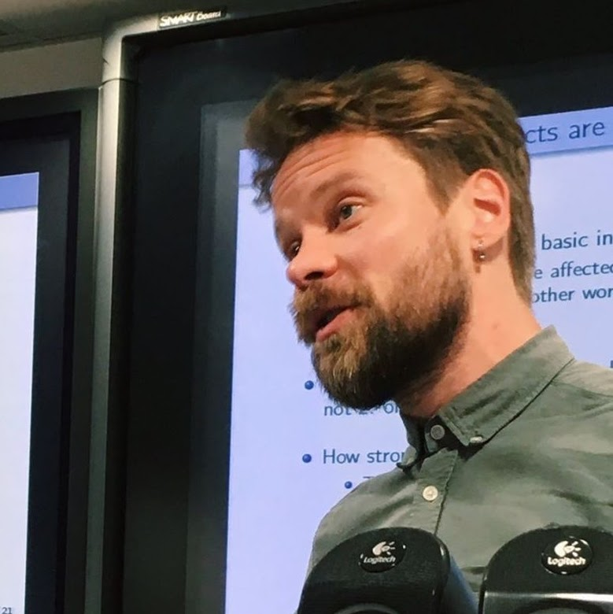

Otto Kässi
Welcome to my homepage!
I am a senior researcher at Etla Economic Research and a research fellow at Aalto University, Department of Computer Science.
I am, among other things, an economist. I got my PhD in Economics from the University of Helsinki in 2014.

Publications
Peer Reviewed
- Koski, H., Kässi, O., & Braesemann, F. (2026). Killers on the road of emerging start-ups—Implications for market entry and venture capital financing. Industrial and Corporate Change, dtaf061.
- Teutloff, O., Einsiedler, J., Kässi, O., Braesemann, F., Mishkin, P., & del Rio-Chanona, R. M. (2025). Winners and losers of generative AI: Early evidence of shifts in freelancer demand. Journal of Economic Behavior & Organization, 106845.
- Kässi, O., & Lehdonvirta, V. (2024). Do microcredentials help new workers enter the market? Evidence from an online labor platform. Journal of Human Resources, 59(4), 1284–1318.
- Braesemann, F., Stephany, F., Teutloff, O., Kässi, O., Graham, M., & Lehdonvirta, V. (2022). The global polarisation of remote work. PLoS ONE, 17(10), e0274630.
- Braesemann, F., Lehdonvirta, V., & Kässi, O. (2022). ICTs and the urban-rural divide: Can online labour platforms bridge the gap? Information, Communication & Society, 25(1), 34–54.
- Kässi, O., Lehdonvirta, V., & Stephany, F. (2021). How many online workers are there in the world? A data-driven assessment. Open Research Europe, 1, 53.
- Stephany, F., Kässi, O., Rani, U., & Lehdonvirta, V. (2021). Online Labour Index 2020: New ways to measure the world's remote freelancing market. Big Data & Society, 8(2).
- Lehdonvirta, V., Kässi, O., Hjorth, I., Barnard, H., & Graham, M. (2018). The global platform economy: A new offshoring institution enabling emerging-economy microproviders. Journal of Management, 45(2), 567–599.
- Kässi, O., & Lehdonvirta, V. (2018). Online labour index: Measuring the online gig economy for policy and research. Technological Forecasting and Social Change, 137, 241–248.
- Kässi, O. (2014). Earnings dynamics of men and women in Finland: Permanent inequality versus earnings instability. Empirical Economics, 46(2), 451–477.
- Kässi, O., & Westling, T. (2013). Demand spillovers of smash-hit papers: Evidence from the 'Male Organ Incident'. SpringerPlus, 2(1), 168.
Working Papers
- Teutloff, O., Stenzhorn, E., & Kässi, O. (2025). Skills, job application strategies, and the gender wage gap: Evidence from online freelancing. ZEW Discussion Papers.
- Kässi, O., & Melia, E. (2024). Good gigs if you get them: Analysis of working schedules and wages of platform workers in India. SSRN.
- Hirvonen, J., Kässi, O., & Ropponen, O. (2023). Jobs, workers, and firms: Dissecting the labour market effects of Finland's COVID-19 subsidy program. ETLA Working Papers.
- Kässi, O. (2022). The labor-market effects of service offshoring: A synthetic control approach with high-dimensional microdata. ETLA Working Papers.
- Kässi, O., Lehdonvirta, V., & Dalle, J.-M. (2019). Workers' task choice heuristics as a source of emergent structure in digital microwork. OSF.
- Kässi, O., & Lehdonvirta, V. (2016). Building the online labour index: A tool for policy and research. Association for Computing Machinery.
Policy Work
- Wang, M., Kässi, O., & Kuusi, T. (2025). Subsidies, but for what? A comparative look at Finland's green subsidies. ETLA Brief.
- Rouvinen, P., Kässi, O., & Pajarinen, M. (2025). Finland's future growth depends on intangible capital: Why policy must expand its scope beyond R&D. ETLA Reports.
- Kässi, O. (2025). The impact of economic crises on intangible investments: Why did intangible investment decline in Finland? ETLA Brief.
- Ropponen, O., Koski, H., Kässi, O., Ylhäinen, I., & Markkanen, J. (2025). Yrityksille suunnattujen koronatukien vaikutukset Suomessa: Loppuraportti. Ministry of Economic Affairs and Employment.
- Kuosmanen, N., Kaitila, V., Kuusi, T., Kässi, O., Maczulskij, T., & Pajarinen, M. (2025). Productivity in the Finnish service industries. ETLA Report.
- Kauhanen, A., Kässi, O., Pajarinen, M., Rouvinen, P., & Vanhala, P. (2024). Generative artificial intelligence: Observations from a Fall 2024 survey. ETLA Brief.
- Kässi, O. (2024). Does AI displace work? The impact of ChatGPT launch on the demand for work. ETLA Brief.
- Kässi, O. (2024). Subsidies for green transition and digitalisation in Finland. ETLA Reports.
- Koski, H., Anttila, J., Björk, A., Djakonoff, V., Kässi, O., et al. (2024). Assessment of the size and impact of the data economy in Finland. ETLA Brief.
- Maczulskij, T., & Kässi, O. (2024). Service offshoring, productivity and employment. ETLA Reports.
- Rouvinen, P., Ali-Vehmas, T., Harakka, T., Hyvärinen, N., Koski, H., Kässi, O., et al. (2024). 5G in the era of geoeconomics: Playbook for Finland? ETLA Report.
- Ropponen, O., Koski, H., Kässi, O., Valmari, N., Ylhäinen, I., & Hirvonen, J. (2024). The effects of Covid-related business subsidies in Finland. ETLA Reports.
- Hirvonen, J., Kässi, O., & Ropponen, O. (2023). Business Finland COVID-19 support funding—What was achieved, and at what cost? ETLA Brief.
- Kässi, O., Ali-Yrkkö, J., Hirvonen, J., & Pajarinen, M. (2023). Did digitalization increase the resilience of societies during the COVID-19 pandemic? ETLA Brief.
- Kuusi, T., Ali-Yrkkö, J., Helanummi-Cole, H., Koski, H., Kovalainen, A., Kässi, O., et al. (2022). Reigniting growth through innovation: Challenges and answers. ETLA Brief.
- Koski, H., Kässi, O., Ropponen, O., & Karppinen, P. (2022). Koronapandemian tukipolitiikan arviointi. Ministry of Economic Affairs and Employment.
- Ali-Yrkkö, J., Koski, H., Kässi, O., Pajarinen, M., Valkonen, T., Hokkanen, M., et al. (2020). The size of the digital economy in Finland and its impact on taxation. ETLA Report.
- Kässi, O. (2015). Tulodynamiikka ja koulutuksen tuottoon liittyvät riskit. Kansantaloudellinen aikakauskirja, 111(1), 106–109.
Thesis
- Kässi, O. (2014). Studies on earnings dynamics and uncertainty in return to education [Doctoral dissertation, University of Helsinki].
Misc
I got to discuss my work on TVO's The Agenda. You can watch the video here.
Here is a photo of me on Aiguilles d'Entrèves.
Contact
email: otto.kassi [at] etla.fi